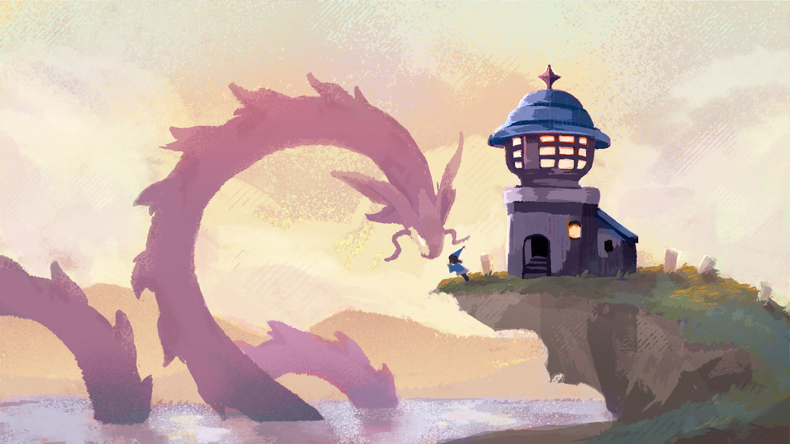
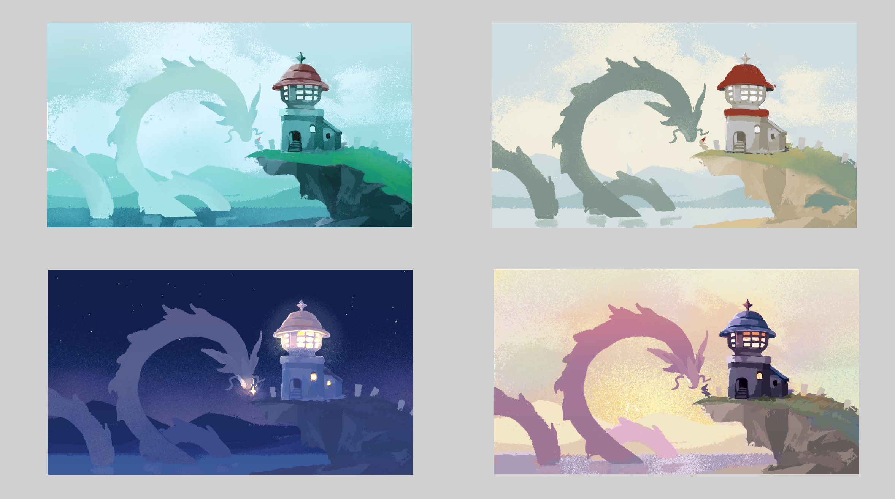
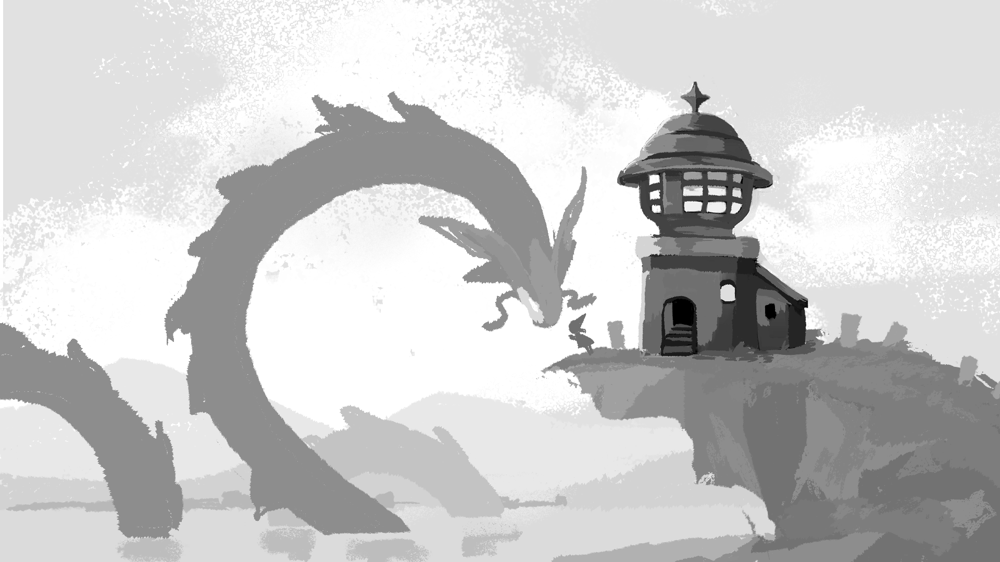

Hi I'm Emma, I'm a Vietnamese-Canadian illustrator who's all about dreamy colours and cute characters! Cursor made by: https://toumeya.itch.io/
© 2020-2024. Hand crafted with ❤ + Flexbox + CSS Grid by James Neufeld.